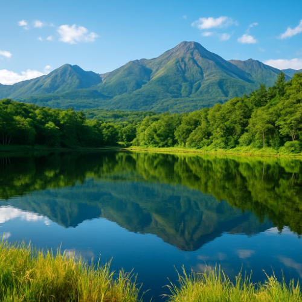

Shiretoko Peninsula – A World Heritage Wilderness

The Shiretoko Peninsula is a UNESCO World Heritage Site in eastern Hokkaido, Japan. Known for its pristine nature, abundant wildlife, and stunning landscapes, it offers one of Japan's most beautiful and untouched wilderness areas. The peninsula is a haven for eco-tourism, attracting travelers who seek a deeper connection with nature.
Why You Need a Guide
The rugged terrain and remote location of Shiretoko can be difficult to navigate, especially if you're unfamiliar with its protected areas. A certified local guide will help you explore the region safely while offering insights into the area's rich biodiversity, from brown bears to sea eagles. Guides also know the best vantage points and hidden gems in the area, ensuring you don’t miss out on the best wildlife sightings.
What to Expect
- 🐻 Explore the rich wildlife and possibly spot brown bears, foxes, and rare birds.
- 🌿 Wander through the unspoiled wilderness and observe unique plant life in its natural habitat.
- 🌊 Enjoy scenic boat tours along the coastline to witness dramatic cliffs and wildlife up close.
- 🏞️ Hike through lush forests and along breathtaking views of the Sea of Okhotsk.
How to Get There
- 🌸 From Sapporo: Take the JR Super Kamui Express to Abashiri Station, then a local bus to Shiretoko.
- 🌸 Self-drive: Rent a car to access remote areas of the peninsula.
- 🌸 Opening hours: The peninsula is open year-round, but it's best to visit from May to October for optimal weather conditions.
- 🌸 Best photo spots: Shiretoko National Park, Cape Shiretoko, and the dramatic cliffs along the coastline.
Why Shiretoko Peninsula is a Must-Visit for Nature Lovers
The Shiretoko Peninsula is one of the most biodiverse and pristine areas in Japan, offering nature lovers and wildlife enthusiasts an unparalleled experience. With its abundant wildlife, stunning landscapes, and eco-tourism opportunities, it's a place where you can truly connect with nature in its raw, unspoiled form.
Tags: Shiretoko Peninsula, Shiretoko Wildlife, World Heritage Site, Hokkaido nature, Shiretoko tour, wildlife Japan, eco-tourism Hokkaido
Planning to visit Shiretoko Peninsula?
To get the most immersive and insightful experience, we recommend booking a certified local private guide from our team. All our guides are licensed professionals officially recognized by the Japanese government, offering personalized tours tailored to your interests. Please contact your selected guide in advance to confirm availability and get expert assistance for your trip.